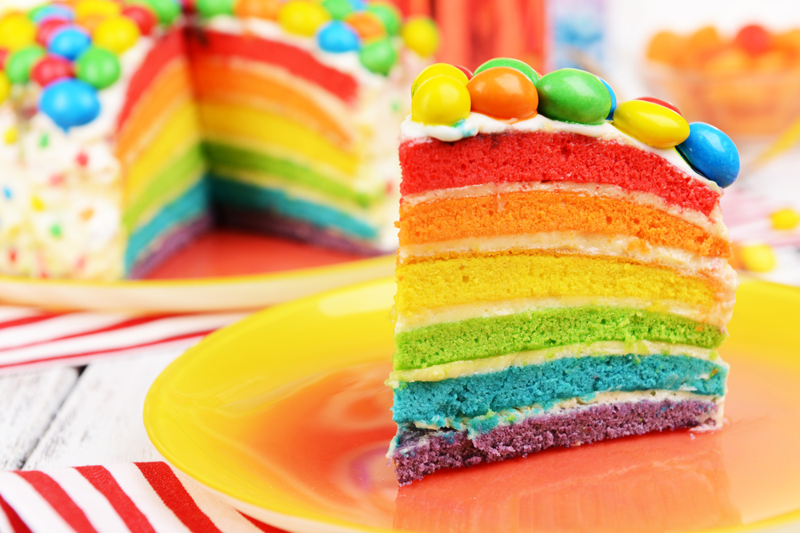

Esse é um bônos em hahhha...
Um efeito lindo que a criançada adora! O bolo arco-íris não sai de moda e necessita de algumas etapas a mais na hora de produzi-lo.
Você pode fazer uma massa de pão de ló simples e separar em potes diferentes, mas com a mesma quantidade. Depois, você vai precisar de corantes para colorir a massa crua e assar cada camada separadamente.
Por fim, é só ir colocando uma sobre a outra e ir recheando com o sabor de sua preferência. Na hora do corte, a surpresa! Um efeito lindo e supercolorido.